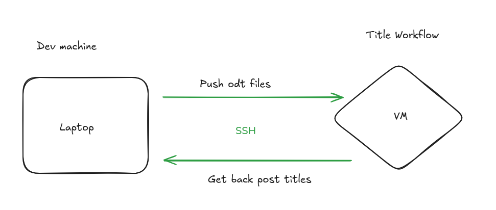
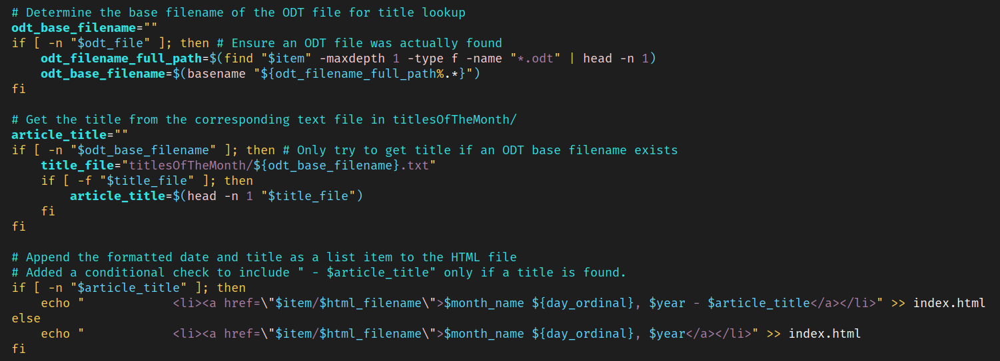

Now that I have setup a my workflow to publish to Github page my blog.
I wanted to improve it a bit by adding titles to each blog post.
For this, as this is a trend in my recent learning journey, I have decided to use LLM to create titles automatically.
On top of that to be an learning experience, I have build a workflow using local AI to automatically generate the blog posts titles each time I’m rebuilding the my blog.
Since I fully rebuild my blog every month when I publish a new post. We will have new titles every month :D
In this post I would like to guide through the high level of the workflow and then next month will look at the back-end using ollama and qwen2 0.5B Model.
In term of infrastructure I have my local machine on which I’m doing all my dev.
And I have a VM on a separate machine which is running the title generation workflow.
Essentially, all my articles are written in Libre Office.
Once, I’m fine with my article, I have a script which push all the odt files to a watch-folder on my VM.
Then, I remote execute on my VM a python script which, with Ollama automatically triggering the title generation. For each odt file a text file with the same file-name is created and contains the article title.
I import back all those text files to my local machine.

I have then updated my bash script responsible for re-building the HTML page each time I’m committing to my GitHub repo.
In this build step, I’m now comparing the filename of the odt and the filename of the txt.
When they match, I’m reading the content of the txt file using the “head”.
And append the title to publication date.
Here is how this part of the code looks:

I have tested several models and end up selecting for now qwen2 0.5B model. The titles are a bit weird but it has the merit to be quite fast to run on CPU, I’m not using GPU for inference for now. Gemma3n is very good but much slower to run.
Will probably change the model time to time and improve this workflow in the future.
I find it funny to have a new title every month for every article. And with this workflow this is quite straight forward to automatically create those titles.
This had a very good advantage to get me up to speed on playing with ollama and offline LLM, I have so much more workflow I would like to put it place this is going to be exciting !
Can’t wait to tell you about it !
Next time we will go through the back-end which is the title workflow creation, hope you will enjoy the read.
If you want to have a look at the code as usual.
https://github.com/Vagrantin/blog
With kind regards.
Matthieu.